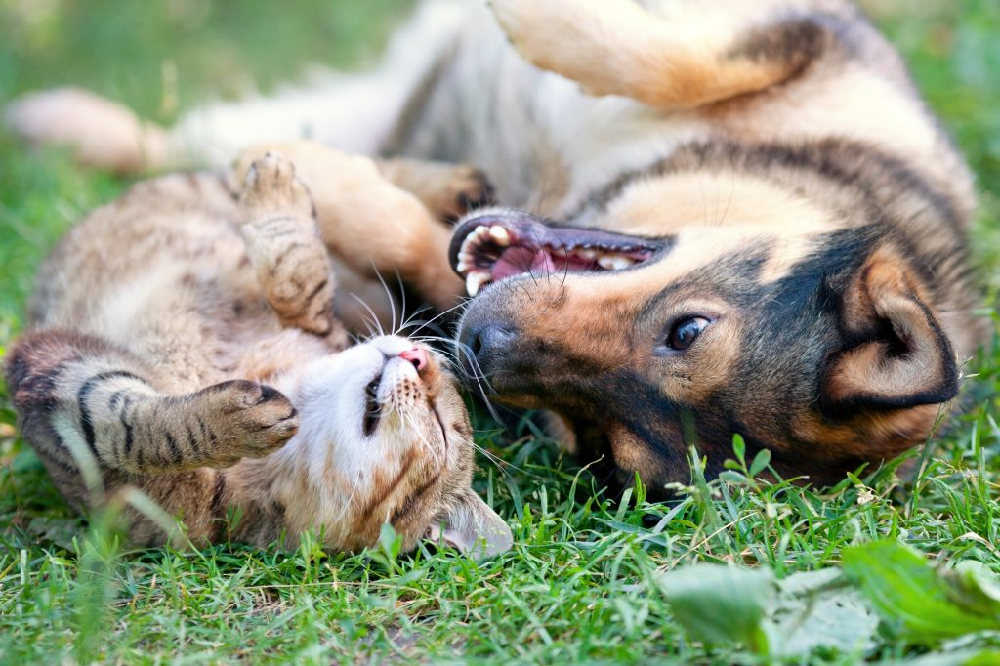
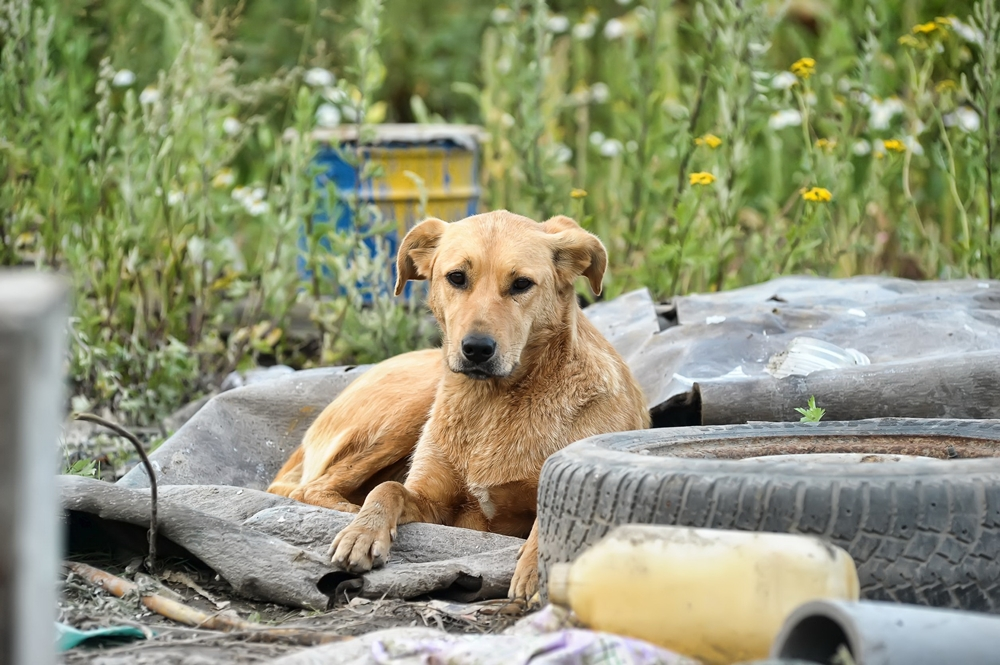
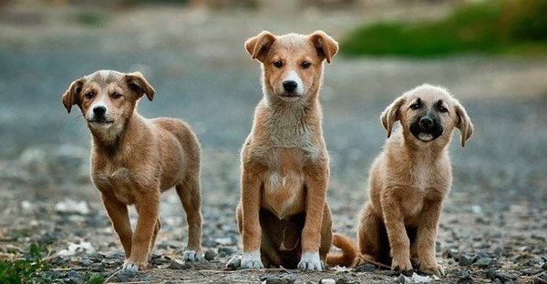

ที่มาและความสำคัญ
ในปัจจุบันประเทศไทยยังคงประสบปัญหาเรื่องสุนัข หรือ แมวจรจัดที่กระจายอยู่ทั่วไปในทุกเขตชุมชน โดยมีสาเหตุหลักของปัญหาคือ ประชาชนผู้เลี้ยงสุนัข หรือ แมว ขาดจิตสำนึกรับผิดชอบในการเลี้ยงสัตว์ หรือ ไม่สามารถแบกรับค่าใช้จ่ายในการดูแลสัตว์เลี้ยงของตนเองได้ ถึงแม้จะมีหน่วยงานมูลนิธิต่าง ๆ หรือ โครงการที่ได้รับการสนับสนุนจากการร่วมมือกันระหว่างภาครัฐกับภาคเอกชน ก็ไม่สามรถดูแลปัญหาได้อย่างทั่วถึงทุกเขตชุมชน จึงมีผู้หวังดีมากมายที่เสียสละตนเองมาช่วยเหลือสุนัขจรจัด หรือ แมวจรจัดเหล่านี้ แต่ในหลาย ๆ ครั้งก็เกิดปัญหาปัจจัยหลักที่ต้องใช้ในการช่วยเหลืออย่างเงินทุนมีไม่เพียงพอในการดูแลสุนัข หรือ แมวจรจัดที่มีอยู่เป็นจำนวนมากภายในประเทศไทยได้
นับตั้งแต่ประเทศไทยประสบปัญหาเรื่องการระบาดของโควิด เจ้าของสุนัขบางคนกลัวติดโรคระบาดจากสัตว์เลี้ยง บางคนได้รับผลกระทบทางเศรษฐกิจทำให้ดูแลสัตว์เลี้ยงไม่ไหวเลยตัดสินใจนำสัตว์เลี้ยงของตนไปปล่อยในชุมชนหรือวัด ทำให้จำนวนสุนัข หรือ แมวจรจัดมีจำนวนเพิ่มมากยิ่งขึ้นส่งผลให้ปัญหาเรื่องสุนัข หรือ แมวจรจัดที่เดิมทีเป็นปัญหาสังคมที่สร้างผลกระทบด้านต่าง ๆ ทั้งการเห่าหอน วิ่งข้ามถนนตัดหน้ารถเสี่ยงทำให้เกิดอุบัติเหตุ คุ้ยขยะเกลื่อนกลาด หรือขับถ่ายไม่เป็นที่เป็นทางส่งกลิ่นอันไม่พึงประสงค์ทวีความรุนแรงมากยิ่งขึ้น นอกจากนี้สุนัข หรือ แมวจรจัดก็ยังเป็นพาหะที่ทำให้เกิดโรคพิษสุนัขบ้าเนื่องจากมีความใกล้ชิดกับชุมชน ซึ่งโรคพิษสุนัขบ้าไม่มีทางรักษาและเมื่อเป็นแล้วมักเสียชีวิตทุกราย ทางที่ดีที่สุดคือการควบคุมและป้องกันโรค ด้วยการฉีดวัคซีนโรคพิษสุนัขบ้าให้กับสุนัข หรือ แมวจรจัดเพื่อลดพาหะที่ทำให้เกิดโรคและนำไปทำหมันเพื่อควบคุมจำนวนประชากรสุนัข หรือ แมวจรจัดไม่ให้เพิ่มมากขึ้น

ปัญหาที่เกิดขึ้นจากสุนัข หรือ แมวจรจัดได้ส่งผลกระทบกับประเทศชาติและคนไทยเป็นวงกว้าง ตราบใดที่ประชากรสุนัขจรจัดยังคนสามารถเพิ่มจำนวนมากขึ้นอย่างต่อเนื่อง ดังนั้นการจัดการปัญหาเรื่องสุนัข หรือ แมวจรจัดในเมืองไทยจึงเป็นปัญหาที่มีความสำคัญและมีความจำเป็นที่จะต้องหาทางแก้ไข ตลอดจนหาแนวทางในการป้องกันไม่ให้เกิดสุนัข หรือแมวจรจัดเพิ่ม การสร้างพื้นที่ส่วนกลางที่ทำให้ผู้หวังดีที่เสียสละตนเองมาช่วยเหล่าสุนัข หรือ แมวจรจัด แต่ขาดปัจจัยในการช่วยเหลือสามารถเปิดรับขอบริจาคจากผู้หวังดีที่มีปัจจัยในการช่วยเหลือแต่ไม่มีเวลา นอกจากนี้ก็ยังเปิดการเปิดโอกาสให้ผู้ที่เป็นเจ้าของสุนัขที่ไม่มีเงินทุนในการพาสัตว์เลี้ยงของตนไปรักษาโรค หรือ ฉีดวัคซีนได้อย่างเหมาะสมเข้ามาเปิดขอรับเงินบริจาคเพื่อแบ่งเบาภาระค่าใช้จ่าย ช่วยให้สามารถช่วยป้องกันและลดปัญหาการทอดทิ้งสุนัขให้กลายเป็นสุนัขจรจัดในชุมชนเนื่องจากไม่สามารถรับผิดชอบค่าใช้จ่ายดูแลสัตว์เลี้ยงได้อีกด้วย
จึงได้ทำจัดทำเว็บแอปพลิเคชัน GivePaws ขึ้นมาเพื่อช่วยแก้ไขปัญหา โดย GivePaws จะทำหน้าที่เป็นศูนย์กลางในการกระจ่ายข่าวสารให้ผู้หวังดีเข้ามาเปิดคำร้องขอรับบริจาคเงินทุนเพื่อนำไปช่วยเหลือสุนัข หรือ แมวจรจัดที่ตนดูแลอยู่ โดยจะต้องแนบรูปภาพสุนัข หรือ แมวจรจัดที่ต้องการช่วยเหลือ พร้อมกับวิธีการรักษา รวมไปถึงจำนวนค่าใช้จ่ายในการดูแลรักษาในคำร้องขอกับผู้หวังดีที่มีทุนทรัพย์ในการบริจาคเงิน ซึ่งจะช่วยเพิ่มประสิทธิภาพในการแก้ไขปัญหาภายในชุมชนที่ถูกดูแลไม่ทั่วถึงให้สามารถควบคุมจำนวนสุนัข หรือ แมวจรจัดในชุมชนและป้องกันโรคพิษสุนัขบ้าในเบื้องต้นก่อนสามารถช่วยเหลือสุนัข หรือ แมวจรจัดที่ป่วย หรือได้รับบาดเจ็บได้ ช่วยลดจำนวนสัตว์เลี้ยงที่จะกลายเป็นสัตว์จรจัดได้ในอนาคตอีกด้วย


 ติดต่อเรา
ติดต่อเรา